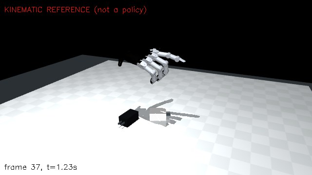

Plug Run 4 · history
documents this agent received (d2s-5) · other runs: run 9 (current) · run 8 · run 7 · run 6 · run 5 · run 3 · run 2 · run 1
- Run 4 · started · last record <time datetime='2026-11-04T04:30:53Z'>Nov 03, 23:30 EST</time> · 0.8 h from first to last record
- stage: simulation
- 8 records · chain verified
- latest result: none yet
- best so far: –
- latest note (hypothesis): Simulation v1 recorded as r0007 at 04:29:54 UTC, after reconstruction r0004 and criteria r0005. Starting iteration 1: deployable 111-input,…
more
Simulation v1 recorded as r0007 at 04:29:54 UTC, after reconstruction r0004 and criteria r0005. Starting iteration 1: deployable 111-input, 26-output residual PPO, separate 128x128 tanh actor/critic, 16 randomized CPU MuJoCo environments, clipped surrogate .2, gamma .995, GAE .95, actor learning rate .0003. Unlearned reference baseline fails: no opposed grasp/lift, thumb pushes white, later joint-speed violation. Hypothesis: dense pad-proximity and opposed-force shaping plus object-state feedback can learn earlier index closure and correct the morphology/contact gap. Training capped at 800000 transitions or 30 minutes; then full recorded criteria evaluation, videos and diagnosis. Elapsed 46 minutes; hard stop remains 11:45 UTC.
Reconstruction v1 · reference check VALID
The agent's reconstruction of the demonstration next to the demonstration, the 3D viewer, component statuses, validation numbers and limitations.
r0004 · reconstruction v1 the agent's own claim, not an official evaluation
reference check (check_reference.py): VALID · errors 0 · warnings 0 · error_list –
Shared metric reconstruction of the two sequential charger pickups: Blender known-dimension bodies/blades, support-constrained silhouette poses, background/standing-object camera anchors, HaWoR-initialized MANO fitting extended in… more
Components
| component | status | method | note |
|---|---|---|---|
| camera | partial | Cuboid PnP regularized to MoGe focal; background rotation; stationary-object silhouette translation anchors | Camera/depth uncertainty and geometric-scale uncertainty remain. |
| object_geometry | from_specification | Blender API body and fixed blades from SPECS | USB recess omitted; sharp box collisions and estimated inertia. |
| objects_6d | partial | Support-constrained known-geometry silhouette fitting, smooth held phases | Median IoU white .870 black .784; hidden poses invalid, orientations partly inferred. |
| hand_motion | ok | HaWoR + extended copied MANO fitter with silhouette, anatomical contact and separation | pass |
| contact_phases | ok | Dense visual inspection, independently checked mesh distances/opposition | [{"hand":"right","object":"plug_white","frames":[78,205],"evaluated":121,"thumb_contact_frac":0.818,"opposed_grasp_frac":0.81,"status":"pass"}, {"hand":"right","object":"plug_black","frames":[251,384],"evaluated":134,"thumb_contact_frac":0.993,"opposed_grasp_frac":0.985,"status":"pass"}] |
| physical_scene | ok | Metric sharp-box dynamics, support height and COM/inertia model | Rest tests settling under .04 mm; physics pass |
Validation numbers
| schema | recon-validation/1 |
|---|---|
| utc | 2026-11-04T04:06:01Z |
| thresholds | {"contact_band_mm":5.0,"phase_fail_mm":10.0,"pen_warn_mm":5.0,"pen_fail_mm":10.0,"wrist_speed_mps":3.0,"wrist_accel_mps2":150.0,"tip_speed_mps":5.0,"bone_jump_deg":60.0,"obj_jump_m":0.1,"obj_rot_jump_deg":45.0,"g":9.81,"g_tol":2.0,"rest_drift_mm":5.0,"sink_mm":3.0,"hand_chain_mm":[140.0,230.0],"iou_ |
| checks | {"reprojection":{"status":"pass","per_part":null,"below_threshold":null,"note":"against your own masks: agreement with them is necessary, not sufficient (3D errors along the viewing ray are invisible here)"},"fingertip_distance":{"status":"pass","phases":null},"anatomical_contact":{"status":"pass"," |
| summary | {"reprojection":"pass","fingertip_distance":"pass","anatomical_contact":"pass","penetration_hand_object":"pass","self_penetration":"warn","continuity":"pass","physics":"pass","handedness_scale":"pass","sync":"pass","camera_focal":"pass"} |
| failed | – |
| incomplete | – |
| missing_required | – |
| overall | pass |
| overall_note | pass |
Limitations
- Monocular depth/scale and camera motion uncertain; poses hidden by hand use smooth physical priors and are invalid when unsupported.
- Residual finger self-intersection warning; image fits and contact measurements are against estimated masks, not ground truth.
- USB recesses omitted, inertia/friction inferred; dimensions and masses are estimates from provided specifications.
Open the 3D hand–object viewer (the agent's reconstruction data; 4 files)
Rendered by the site's own viewer module from the data the agent uploaded; nothing is synthesised.
recorded 2026-11-03 23:08 EST · version v1 · producer r2s2r-d2s recon
Criteria v1
The agent's own verification criteria, with the reason for each revision.
r0005 · criteria v1
- 7650 characters of criteria text
Criteria text
Plug manipulation — verification criteria v1 (agent-defined)
These are my claims about my own simulation, not an official task evaluation. They are fixed before policy evaluation. The policy must be deployable and PPO-trained; a scripted or reference baseline is evaluated separately and cannot satisfy the learned-policy requirement.
Evidence and high-level task plan: TASK.md requires white first, black second, each moved from right to left and standing with blades up. Video frames 0–70 show side-lying objects and palm-down approach; roughly 70–105 show the white grasp/lift, 105–166 its rotation and carry, 166–210 lowering/release; 210–260 return; 260–290 black grasp/lift, 290–341 rotation/carry, 341–386 lowering/release; 387–435 withdrawal and stationary upright objects. Contact boundaries are visually uncertain by approximately 5 frames. The common-frame reconstruction estimates 0.218 m and 0.224 m leftward travel, peak body-bottom clearances 0.046 m and 0.041 m, and a 90-degree blade-axis reorientation for both. These are regularized monocular estimates, not ground truth: dimensions have about 10% uncertainty, supported-pose translation uncertainty is heuristically 8 mm, and occluded motion is partly inferred. The demo README's approximate 0.25 m carry is consistent with that uncertainty.
Ordered stages and exact per-episode tests:
- Start: both body centers are on the right (world y ≤ 0.15 m), body-bottom gaps from the tabletop ≤ 2 mm, blade axes within 15 degrees of horizontal. White is approached first. Initial positions and side-lying orientations come from the recorded reconstruction with a fixed rigid world-frame offset.
- White pickup: thumb and at least one opposing non-thumb finger have physical contact with the white body, each normal contact force ≥ 0.03 N for at least 0.15 s. Their contact-point directions from the body center must differ by ≥ 60 degrees. Before white release the body's lowest corner must be ≥ 0.020 m above the table for ≥ 0.20 s. The lift threshold is about half the reconstructed 4.6 cm clearance, allowing the combined depth/edge uncertainty while still requiring a clear pickup rather than a slide.
- White placement/release: after pickup, its body center reaches y > 0.15 m, with net leftward displacement ≥ 0.180 m from reset; its local +Z makes ≤ 12 degrees with world +Z. The displacement bound is the 21.8 cm estimate minus approximately 10% scale uncertainty and 8 mm positional uncertainty. Upright tolerance is small relative to the demonstrated 90-degree turn and allows contact settling and estimated camera tilt. The body's bottom is within 2 mm of the table. There are no hand–white contacts for ≥ 0.50 s. White must reach this state before black pickup.
- Black pickup: same opposing-contact and lift tests as white. Until white has been released, the black center must remain within 0.010 m of its reset position and its blade-axis tilt must change by ≤ 10 degrees. This expresses the demonstrated sequential manipulation and permits sub-centimeter incidental vibration.
- Black placement/release: same left-side, ≥ 0.180 m displacement, ≤ 12-degree upright tilt, ≤ 2 mm support gap and ≥ 0.50 s no-hand-contact tests as white. It is placed beside white; final horizontal center separation must be between 0.040 m and 0.100 m (reconstruction approximately 0.062 m, with combined geometric uncertainty). White must remain upright after its release and its center move by ≤ 0.010 m during the black cycle.
- Final persistence: during the final continuous 1.00 s, both satisfy the placement geometry, have speed < 0.020 m/s and angular speed < 0.20 rad/s, remain supported by the table, and have no hand contacts. No plug falls off the table, is welded to the hand, is teleported, or is directly actuated. Object/table penetration must not exceed 2 mm. A one-second final hold is slightly longer than the visibly withdrawn-hand portion at the end of the clip and tests independent stability.
- Wrist resemblance: form a robot reference from each supported reconstructed right-hand palm: +X toward the thumb side (index MCP minus little MCP), −Z from wrist toward middle MCP, +Y = Z × X, orthogonalized. This maps directly to the hardware palm axes. Compare actual wrist orientation with this reference at corresponding normalized subphase time, using quaternion geodesic angle. During approach, grasp/lift, carry/turn and release for each object, require median error ≤ 30 degrees and 90th percentile ≤ 45 degrees wherever the reconstruction is valid, and report reference coverage. The fitted approach palm-normal angles are median 23 degrees (90th percentile 47 degrees) for white (frames 60–80) and median 51 degrees (90th percentile 53 degrees) for black (245–265); require the actual phase median within 45 degrees of downward for white and within 65 degrees for black, with phase 90th percentiles at most 65 and 75 degrees respectively. These phase-specific limits allow the roughly 15-degree reconstruction uncertainty without reversing the observed palm direction. Tolerances account for anatomical palm-to-mount differences and monocular hand rotation uncertainty; they do not permit a reversed palm. Measured fitted palm-normal phase medians are white lift 19.3 degrees, carry 42.2 degrees, release 42.4 degrees; black lift 75.9 degrees, carry 49.3 degrees, release 46.9 degrees. These show that wrist orientation changes during each skill rather than remaining palm-down throughout. Wrist position errors are reported, but are not gated because robot and human hand lengths differ.
- Timing: both cycles and final one-second hold finish within 16.0 s. The human clip is 14.53 s; 1.47 s permits the robot's actuator settling and an independently observed final hold. No requirement forces motion faster than hardware permits.
- Hardware and policy: every recorded 1 kHz physics/controller state must obey the original 20-joint order, position limits with the specified 0.02 rad stop allowance, speed limits with no allowance, and effort limits with no allowance. Report torque-demand saturation separately. Actions are finite and go through the specified 1 kHz wrist impedance and finger PD controllers with 500 Hz command holds. No joint state clipping may hide a violation. Network inputs are only the deployable set in LEARNING.md. Every RL stage uses PPO. Any base/reference action contribution and its standalone result must be disclosed.
An episode succeeds only if every stage above is met in order, with no hardware violation. Evaluation uses five repeated nominal episodes (all must pass), plus 20 fixed seeds (0–19) with independently uniform initial XY object offsets ±3 mm, initial yaw ±3 degrees, masses ±10%, and sliding friction ±0.05 about the stated simulator values. The robustness claim passes only at ≥18/20 successful randomized episodes, with no hardware violations in any evaluation episode. Nominal and randomized rates are reported separately. These small perturbations represent specification and reset uncertainty; they are not a claim of real-world transfer.
Assumptions and limits: known charger bodies/blades are rigid; USB recesses do not matter to the intended grasp; mass and friction are uncertain; no tactile sensing is available to the policy; object state feedback is ideal except explicitly recorded noise. The camera's metric layout and hidden finger contacts cannot be proven from one video. Verification establishes behavior only in the recorded simulation and tested reset range. Any change to these criteria requires a new recorded version and a physical reason, never a failed policy's convenience.
Simulation · 1 version
The training simulation as recorded by the agent, per version.
r0007 · simulation v1

Changes in this version
First simulation version.
Recorded fields
- Reconstruction version
- 1
- Simulator
- name
- MuJoCo
- version
- 3.17.0
- time_step_s
- 0.001
- integrator
- implicitfast
- solver
- Newton
- iterations
- 50
- cone
- elliptic
- contact_solref
- 0.005, 1
- contact_solimp
- 0.95, 0.99, 0.001
- Reference
- record
- r0004
- method
- Offline kinematic retargeting of diagonal thumb/index body contacts with pad normals, full-link surface nonpenetration, conservative table clearances and wrist orientation adaptation within 25deg of reconstructed palm.…
more
Offline kinematic retargeting of diagonal thumb/index body contacts with pad normals, full-link surface nonpenetration, conservative table clearances and wrist orientation adaptation within 25deg of reconstructed palm. Shortest 90deg blade-axis reorientation removes ambiguous reconstructed axial spin. This unlearned baseline is not a reported PPO solution. - world_shift
- -0.25, 0.06, 0.286745
- adaptation
- Offline pad-position and normal IK, full-link nonpenetration and table clearance. Human palm axes mapped to robot root. Ambiguous object axial spin removed while preserving start/end blade axis and measured…
more
Offline pad-position and normal IK, full-link nonpenetration and table clearance. Human palm axes mapped to robot root. Ambiguous object axial spin removed while preserving start/end blade axis and measured translations. This is an unlearned reference baseline.
- Controllers
- wrist
- Hardware wrist-1 at 1kHz, hand-only gravity compensation, 2000/60 translation,20/.4 rotation,30N and2Nm norm caps. Commands 500Hz,2.5m/s and6rad/s target caps.
- fingers
- Specified 1kHz joint PD gains and torque saturation; joint target clipping; no joint state/velocity clipping. Every actual 1kHz velocity checked; terminate on violation.
- policy
- 50Hz residual network produces 26 actions; pose/finger targets interpolated to 500Hz. Position residual .015m, rotation-vector residual .18rad, finger residual .18rad per action unit; EMA command weight .35; finger…
more
50Hz residual network produces 26 actions; pose/finger targets interpolated to 500Hz. Position residual .015m, rotation-vector residual .18rad, finger residual .18rad per action unit; EMA command weight .35; finger target rate1.5rad/s. Only reference preprocessing, no runtime optimization.
- Initial conditions
- wrist_position
- 0.0247215, -0.0288394, 0.234477
- wrist_quaternion_wxyz
- 0.578231, -0.412685, -0.560498, 0.425654
- finger_q
list (20 items)
1.64288e-06, -0.300002, 0.100003, 0.0499995, 0.150002, 9.98041e-07, 0.250002, 0.149999, 0.5, 2.05166e-09, 1.1, 0.7, 0.5, -3.54965e-25, 1.1, 0.7, 0.5, -1.19846e-10, 1.1, 0.7- objects
list (2 items)
[[0.13459917902946472,0.01560464635491371,0.014500000000000013,-0.14873059483965112,0.6912880804401618,0.14873059483965112,0.6912880804401618],[0.053158730268478394,-0.05035200953483582,0.015900000000000025,-0.5320389959239877,-0.46576228573833117,0.5320389959239877,-0.46576228573833117]]- reason
- The first supported reconstructed approach (frame37), adapted to larger hand morphology; object poses from frame0 under a single rigid frame offset.
- Episode
- length_s
- 16
- policy_hz
- 50
- command_hz
- 500
- controller_physics_hz
- 1000
- initial_demo_frame
- 37
- termination
- 16s, any hardware position/speed violation, object falling below table, invalid actions
- Validation
JSON (15 keys)
{"hand_mass_kg":0.6878,"mass_matches":true,"joint_order_matches":true,"position_limits_match":true,"effort_limits_match":true,"object_masses_kg":[0.075,0.055],"object_com_m":[[0.0,0.0,0.002],[0.0,0.0,0.002]],"circle_tracking_max_mm":0.30397109066122935,"circle_tracking_rms_mm":0.2800754746437344,"circle_tracking_max_deg":0.17055785804718987,"no_contact_finger_max_speed_ratio":0.021650258174141356,"wrist_controller":"2000/60 N/m translational, 20/.4 rotational, hand-only gravity compensation, 30N and 2Nm norm saturation. Direct forces applied at wrist root using mj_applyFT.","object_settling":{"initial":{"drift_mm":null,"final_centers":null},"upright":{"drift_mm":null,"final_centers":null}},"physics":{"simulator":"MuJoCo","version":"3.17.0","time_step_s":0.001,"integrator":"implicitfast","solver":"Newton","iterations":50,"cone":"elliptic","contact_solref":[0.005,1],"contact_friction":"table/plastic .6, rubber pads 1.0; inferred"},"limitations":["No torque-speed envelope published; measured velocities are checked against max speeds every tick, with termination on any violation rather than hidden clipping.","Hand collision shapes are fitted boxes/capsules/ellipsoids with original mesh visuals, masses and inertias. Adjacent mechanical assemblies have collision exclusions to avoid false convex-hull contacts. This approximates the true contact surfaces and pad compliance.","Reference retargeting is kinematic and not a learned controller. Its dynamic baseline is separately evaluated."]}- Limitations
list (3 items)
No torque-speed envelope published; measured velocities are checked against max speeds every tick, with termination on any violation rather than hidden clipping., Hand collision shapes are fitted boxes/capsules/ellipsoids with original mesh visuals, masses and inertias. Adjacent mechanical assemblies have collision exclusions to avoid false convex-hull contacts. This approximates the true contact surfaces and pad compliance., Reference retargeting is kinematic and not a learned controller. Its dynamic baseline is separately evaluated.- Media
- initial_image
- initial.png
- replay
- replay.mp4
- label
- Kinematic reference next to human video; not a dynamic learned rollout
- unlearned_baseline
- result
- FAIL
- episodes
- 1
- metrics
JSON (8 keys)
{"terms":{"object_tracking":2.0382337666951993e-11,"upright_left":0.0,"contact_proximity":3.594211279878532e-26,"force_grasp":0.0,"grasp":0.0,"lift":0.0,"placement":0.0,"wrist":0.6418794724799778,"action_cost":0.0,"hardware":1.0},"grasp":[false,false],"lift":[false,false],"placed":[false,false],"best_lift":[0.00017867665680923635,0.0],"hardware_violation":true,"max_speed_ratio":1.7554560680794133,"return_":343.1185342122158}- diagnosis
- Thumb touches first; index remains too far; object slides rather than lifts. No demonstrated grasp/lift/placement; later hardware speed violation. Baseline is not a learned PPO solution.
Iterations · not yet
Each evaluated training iteration; the latest is expanded.
Policy with privileged information (0) · the policy observes more than proprioception and object states (for example a teacher)
Deployable policy (no privileged information) (0) · the policy observes only proprioception and object states
Verification · not yet
Verification results recorded by the agent — the agent's own claim, not an official evaluation.
Policy with privileged information (0) · the policy observes more than proprioception and object states (for example a teacher)
Deployable policy (no privileged information) (0) · the policy observes only proprioception and object states
Notes · 5
Hypotheses, decisions, reflections and blockers.
more
more
more
more
more
Timeline · 8 records
Every record in the order received; a simulation, iteration or verification before the first reconstruction is marked out of order.